引入
- JavaScript 中的内存管理是自动执行的，而且是不可见的
- 我们创建基本类型、对象、函数……所有这些都需要内存
当不再需要某样东西（内存）时会发生什么? JavaScript 引擎是如何发现并清理它?
垃圾回收原则
可达性
- JavaScript 中内存管理的主要概念是可达性——那些以某种方式可访问或可用的值，它们被保证存储在内存中
- JavaScript 引擎中有一个后台进程称为垃圾回收器，它监视所有对象，并删除那些不可访问的对象
根
一组基本的固有可达值，由于显而易见的原因无法删除，如：
- 本地函数的局部变量和参数
- 当前嵌套调用链上的其他函数和参数
- 全局变量
- 还有一些其他的、内部的
这些值称为根
可访问
如果引用或引用链可以从根访问任何其他值，则认为该值是可访问的
简单例子
let user = {
name:'john'
};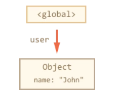
- 这里存在一个对象引用
- 如果 user 的值被覆盖，则引用丢失
user = null;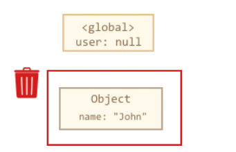
现在 John 变成不可达的状态，没有办法访问它，没有对它的引用。垃圾回收器将丢弃 John 数据并释放内存
相互关联
function marry (man, woman) {
woman.husban = man;
man.wife = woman;
return {
father: man,
mother: woman
}
}
let family = marry({
name: "John"
}, {
name: "Ann"
})内存结构：
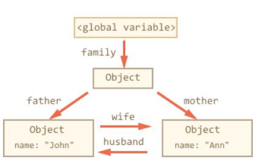
现在删除两个引用
delete family.father;
delete family.mother.husband;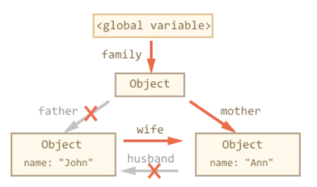
输出引用无关紧要。只有传入的对象才能使对象可访问，因此，John 现在是不可访问的，并将从内存中删除所有不可访问的数据
垃圾回收之后：
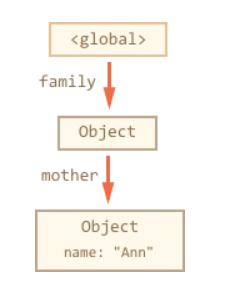
垃圾回收机制
基本概念
- 局部变量：构建函数上下文环境
- 局部变量会在函数弹出栈后自动清除
- 注意闭包的特殊情况
- 基本类型值：存储在栈内存中
- 引用类型值：数据本身存储在堆内存中
- 指向数据的指针在栈内存中
标记清除（mark-and-sweep）
简述
标记清除(mark-and-sweep) 是 JavaScript 中最常用的垃圾回收方式，执行机制如下：
- 当变量进入环境时，就将其标记为“进入环境”
- 当变量离开环境时将其标记为“离开环境”
收集策略
假设有以下对象：
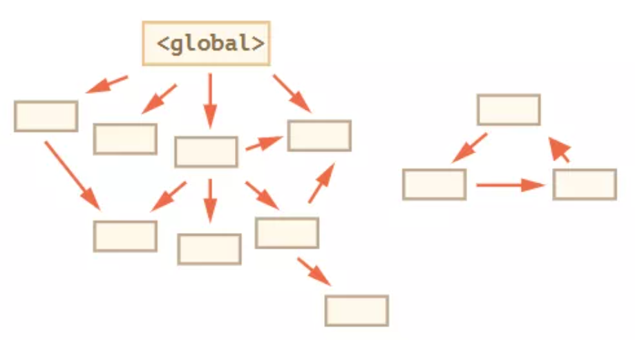
垃圾收集器找到所有的根，并“标记”（记住）它们
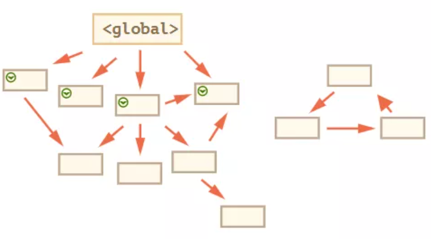
然后它遍历并“标记”来自它们的所有引用。
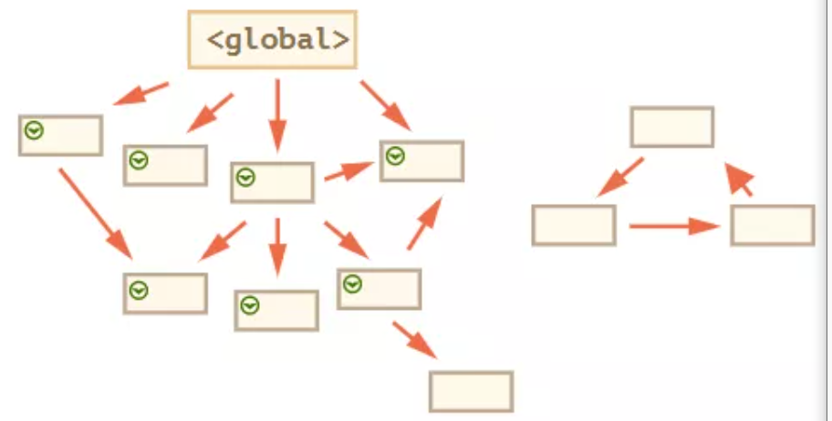
然后它遍历标记的对象并标记 他们的 引用。所有被遍历到的对象都会被记住，以免将来再次遍历到同一个对象。
……如此操作，直到所有可达的（从根部）引用都被访问到。
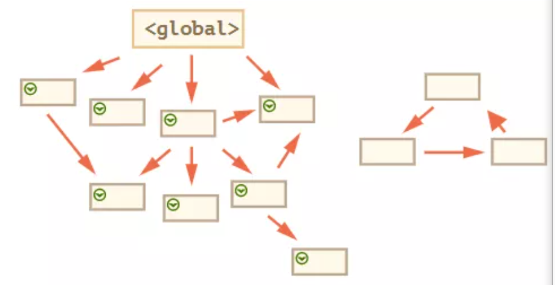
没有被标记的对象都会被删除
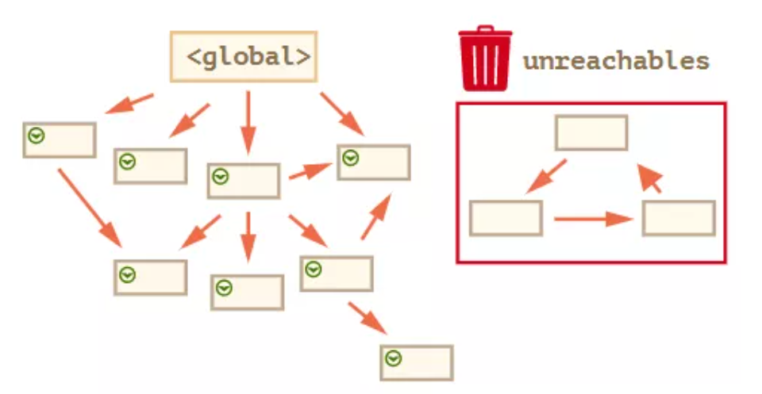
浏览器支持
从2012年起，所有现代浏览器都使用了标记-清除垃圾回收算法
引用计数
简述
引用计数的本质是 跟踪记录每个值被引用的次数。其执行机制如下：
- 当声明一个变量并将一个引用类型值赋值给该变量时，这个值的引用次数为1
- 若同一个值(变量)又被赋值给另一个变量，则该值的引用次数加1
- 但是如果包含对这个值引用的变量又取得了另外一个值，则这个值的引用次数减1
- 当这个值的引用次数为0时，则无法再访问这个值，就可回收其占用的内存空间
- 垃圾收集器下次运行时，会释放那些引用次数为零的值所占用的内存
问题
引用计数存在一个致命的问题： 循环引用
function cycleRefernce() {
var objectA = new Object();
var objectB = new Object();
objectA.someOtherObject = objectB;
objectB.anotherObject = objectA;
}- 上述例子中 objectA 和 objectB 通过各自属性相互引用。按照引用计数的策略，两个对象的引用次数均为 2
- 若采用标记清除策略，函数执行完毕，对象离开作用域就不存在相互引用
- 但采用引用计数后，函数执行完，两个对象的引用次数永不为0，会一直存在内存中，若多次调用，导致大量内存得不到回收
垃圾回收的性能问题
- 垃圾收集器是周期运行的，确定 垃圾收集的时间间隔 是个重要的问题
- IE7之前的垃圾收集器是根据内存分配量运行的，即 256 个变量、4096 个对象(数组)字面量或 64 KB 的字符串。达到这些临界值的任何一个，垃圾收集器就会运行
- 如果一个脚本含有很多变量，在整个生命周期中一直保有前面临界值大小的变量，就会频繁触发垃圾回收，会存在严重的性能问题
- IE7 重写了垃圾收集例程。新的工作方式为：触发垃圾收集的变量分配、字面量和数组元素的临界值被调整为 动态修正。初始值与之前版本相同，但如果垃圾收集例程回收的内存低于 15%，则临界值加倍。若回收内存分配量超过 85%，则临界值重置回默认值
V8引擎的回收机制
内存限制
- 在其他的后端语言中，如Java/Go, 对于内存的使用没有什么限制
- JS不一样，V8只能使用系统的一部分内存
- 在
64位系统下，V8最多只能分配1.4G - 在
32位系统中，最多只能分配0.7G
- 在
原因
JS是单线程运行的，这意味着一旦进入到垃圾回收，那么其它的各种运行逻辑都要暂停; 另一方面垃圾回收其实是非常耗时间的操作
V8 官方形容：
以 1.5GB 的垃圾回收堆内存为例，V8 做一次小的垃圾回收需要50ms 以上，做一次非增量式(ps:后面会解释)的垃圾回收甚至要 1s 以上
因此，V8 做了一个简单粗暴的选择，那就是限制堆内存
调整
也可以配置内存限制，命令如下：
// 这是调整老生代这部分的内存，单位是MB。后面会详细介绍新生代和老生代内存
node --max-old-space-size=2048 xxx.js
// 这是调整新生代这部分的内存，单位是 KB。
node --max-new-space-size=2048 xxx.js堆内存的划分
- 新生代内存
- 临时分配
- 存活时间短
- 老生代内存
- 常驻内存
- 存活时间长
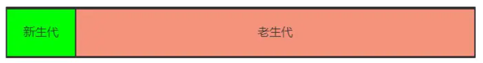
新生代内存的回收
内存限制
- 64位：32MB
- 32位：16MB
回收机制
首先将新生代空间一分为二：
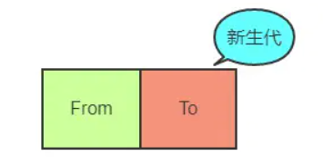
From部分表示正在使用的内存
To部分表示目前闲置的内存
进行垃圾回收时，V8 将From部分的对象检查一遍，如果是存活对象那么复制到To内存中(在To内存中按照顺序从头放置的)，如果是非存活对象直接回收即可
- 注意To部分内存是按照顺序存放的
当所有的From中的存活对象按照顺序进入到To内存之后，From 和 To 两者的角色
对调，From现在被闲置，To为正在使用，如此循环
Scavenge算法
当From部分内存是这样时：
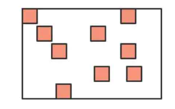
深色的小方块代表存活对象，白色部分表示待分配的内存，由于堆内存是连续分配的，这样零零散散的空间可能会导致稍微大一点的对象没有办法进行空间分配，这种零散的空间也叫做内存碎片
Scavenge 算法主要就是解决内存碎片的问题，在进行一顿复制之后，To空间变成了这个样子:
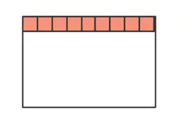
不过Scavenge 算法的劣势也非常明显，就是内存只能使用新生代内存的一半，但是它只存放生命周期短的对象，这种对象
一般很少，因此时间性能非常优秀
老生代内存的回收
晋升
新生代中的变量如果经过多次回收后依然存在，那么就会被放入到老生代内存中，这种现象就叫晋升
造成晋升的情况总结：
- 已经经历过一次 Scavenge 回收
- To（闲置）空间的内存占用超过25%
回收机制
使用JavaScript标准的标记-清除方法
整理内存碎片
V8 的解决方式非常简单粗暴，在清除阶段结束后，把存活的对象全部往一端靠拢
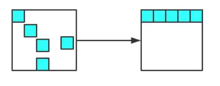
由于是移动对象，它的执行速度不可能很快，事实上也是整个过程中最耗时间的部分
增量标记
- 由于JS的单线程机制，V8 在进行垃圾回收的时候，不可避免地会阻塞业务逻辑的执行，倘若老生代的垃圾回收任务很重，那么耗时会非常可怕，严重影响应用的性能
- 为了避免这样问题，V8 采取了增量标记的方案
- 即将一口气完成的标记任务分为很多小的部分完成，每做完一个小的部分就”歇”一下，就js应用逻辑执行一会儿，然后再执行下面的部分，如果循环，直到标记阶段完成才进入内存碎片的整理上面来